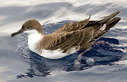
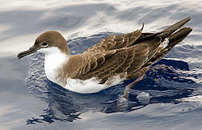

| Great Shearwater | |
|---|---|
|  | |
| Conservation status | |
| Binomial name | |
| Puffinus gravis (O'Reilly, 1818) |
|
| Synonyms | |
|
Procellaria gravis O'Reilly, 1818 |
| Great Shearwater | |
|---|---|
|  | |
| Conservation status | |
| Binomial name | |
| Puffinus gravis (O'Reilly, 1818) |
|
| Synonyms | |
|
Procellaria gravis O'Reilly, 1818 |
The Great Shearwater (Puffinus gravis) is a large shearwater in the seabird family Procellariidae. Its relationships are unclear. It belongs in the group of large species that could be separated as genus Ardenna (Penhallurick & Wink 2004); within these, it might be allied with the other black-billed, blunt-tailed species Short-tailed Shearwater and especially Sooty Shearwater (Austin 1996, Heidrich et al. 1998). Alternatively (Austin 1996, Austin et al. 2004), it could be a monotypic subgenus (Ardenna sensu stricto), an Atlantic representative of the light-billed Hemipuffinus group (Pink-footed shearwater and Flesh-footed Shearwater).
This species breeds on Nightingale Island, Inaccessible Island, Tristan da Cunha, and Gough Island. It is one of only a few bird species to migrate from breeding grounds in the Southern Hemisphere to the Northern Hemisphere, the normal pattern being the other way round. This shearwater nests in large colonies, laying one white egg in a small burrow or in the open grass. These nests are visited only at night to avoid predation by large gulls.
This shearwater, like the Sooty Shearwater, follows a circular route, moving up the eastern seaboard of first South and then North America, before crossing the Atlantic in August. It can be quite common off the south-western coasts of Great Britain and Ireland before heading back south again, this time down the eastern littoral of the Atlantic.
This bird has the typically "shearing" flight of the genus, dipping from side to side on stiff wings with few wingbeats, the wingtips almost touching the water. Its flight is powerful and direct, with wings held stiff and straight.
This shearwater is 43–51 cm in length with a 105–122 cm wingspan. It is identifiable by its size, dark upperparts, and underparts white except for a brown belly patch and dark shoulder markings. It has a black cap, black bill, and a white "horseshoe" on the base of the tail. The stiff flight, like a large Manx Shearwater, is also distinctive. The only other large shearwater in its range is the all-dark Sooty Shearwater.
The Great Shearwater feeds on fish and squid, which it catches from the surface or by plunge-diving. It readily follows fishing boats, where it indulges in noisy squabbles. This is a gregarious species, which can be seen in large numbers from ships or appropriate headlands. They have a piercing eeyah cry usually given when resting in groups on the water.

{kind=link}
{kind=link}